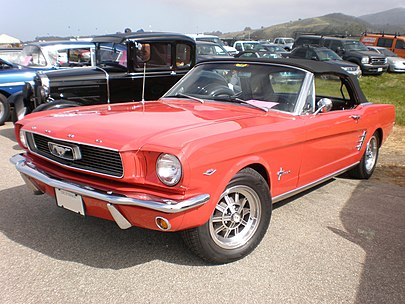

Основные характеристики:
- В зависимости от модификации, длина автомобиля составляет 4613-4923 мм, ширина – 1732-1882 мм, высота – 1288-1298 мм, колесная база – 2743-2770 мм.
- Карбюраторные «шестерки» и «восьмерки» с рядным расположением цилиндров объемом 4.1-5.8 литра, генерирующие от 96 до 289 лошадиных сил и от 270 до 502 Нм пиковой тяги.
- V-образные восьмицилиндровые агрегаты на 4.7-7.0 литров, производительность которых насчитывает от 228 до 340 «скакунов» и от 414 до 597 Нм крутящего момента.
Впервые перед публикой легендарный пони-кар Ford Mustang первого поколения предстал в апреле 1964 года, а уже в марте стартовало его серийное производство.
Концепт модели был показан еще в 1962 году, однако настоящими «прародителями» американского
«жеребца» принято считать ничем неприметные
Ford Falcon и Ford Fairlane, от которых он заимствовал большую часть механической «начинки».
За историю своего существования оригинальная машина практически ежегодно модернизировалась,
причем не просто улучшались внешность и техника, но и увеличивались габаритные размеры.
На конвейере «Мустанг» продержался до июня 1973 года, после чего уступил место правопреемнику.
«Первый» Ford Mustang до сих пор является одним из самых узнаваемых автомобилей благодаря характерным спортивным пропорциям с длинным капотом, чистыми линиями, коротким багажником и умеренным количеством хрома.
«Мустанг» оригинального поколения был доступен в трех кузовных вариантах: двухдверный седан-хардтоп,
фастбек (то есть купе с покатой крышей) и кабриолет с матерчатым верхом.
В зависимости от модификации, длина автомобиля составляет 4613-4923 мм, ширина – 1732-1882 мм, высота – 1288-1298 мм, колесная база – 2743-2770 мм.
Внутри Ford Mustang первой генерации царит классическая обстановка: крупная «баранка» с тонким ободом, основной инструментарий и простецкая передняя панель.
К положительным особенностям масл-кара можно отнести изящную внешность, высокую надежность, крепкую конструкцию,
приемлемые показатели динамики (на мощных версиях), хорошие ходовые качества и общее понимание того, что данный «Мустанг»
по-настоящему легендарен. Но не обошлось и без отрицательных моментов – высокая стоимость в России,
большой расход топлива, плохое управление и необходимость ожидания запчастей из США.